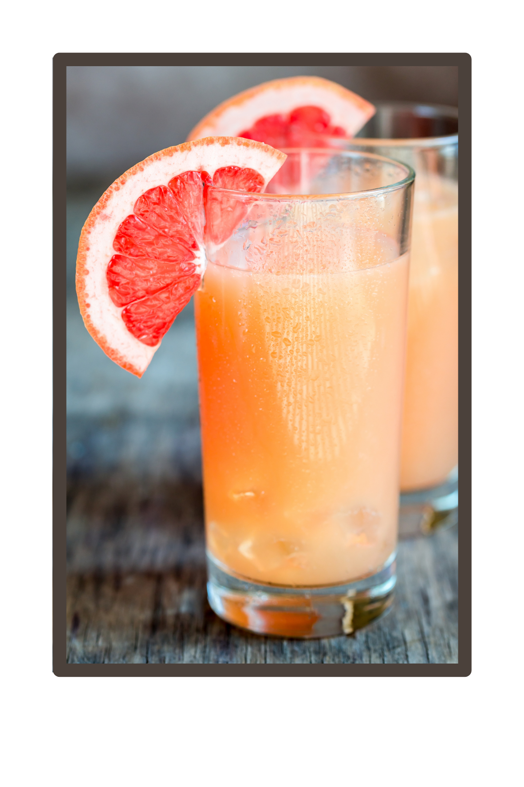

Paloma

A refreshing summer ccoktail!
This easy paloma recipe is perfect for hot, lazy summer days or anytime
you are craving a fun summery drink.
After you mix it together, taste and adjust your drink to your personal tastes.
Ingredients
- 2 ounces Tequila
- 2 ounces Fresh Grapefruit Juice (plus wedges for garnish)
- 2 ounces Sparkling Water
- 1/2 ounce Fresh Lime Juice
- 1/4 ounce Simple Syrup (or agave nectar, to taste)
- add Sea Salt (for the rm of the glass)
- add Ice
Instructions
- Salt the rim of the glass by rubbing a grapefruit wedge around
the edge of the glass and dipping it onto a small plate of salt. Fill glass with ice.
- Shake or stir the tequila, grpaefrut juice, lime juice, and simple syrup and pour over ice.
- Top with sparkling water and garnish with grapefruit wedge.
Home